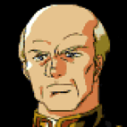
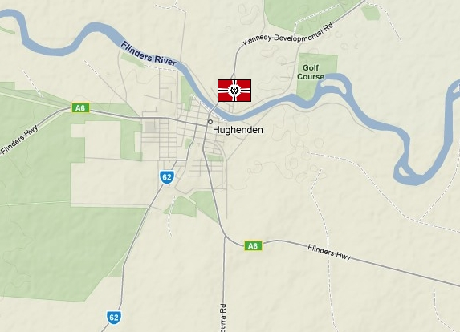

Hughendon Hughendon
Northern Australia Fortress Curtis The most remote and least important of Zeons spaceports, Hughendon lies in the middle of nowhere, northern Australia. With rolling plains and low hills on all sides, the large base is covered only by its own defensive wall, but a small Federal presence in the area gives the base a security all its own. Australia has long been the forgotten sector of the war, and although both sides control parts of the region and maintain skirmishes, it's even been known for Zeon and Federation soldiers in Australia to go drinking together on shoreleave.  Curtis A staunch patriot for the cause of Zeon, Curtis believes this to be a holy war, destroying the dominance of those who have been weighed down by gravity. He does not understand his position as commander of an ass end fortress, but does not question it either. An honourable and effective soldier, he is equally at home both on a battleship or in a mobile suit. Hughendon  |